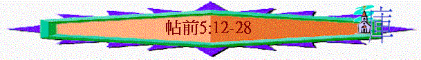

|
信仰的堅立與勉勵 |
|
|
信仰的堅定 |
生活的勉勵 |
|
1-3 |
4-5 |
二.生活的勉勵(4:1-5:22)
1.更加勉勵的原因(4:1)
2.更加勉勵的內容(4:2-5:22)
E.在教會生活上更加勉勵(5:12-15)
～此段有很多「勸」、「勉勵」等字眼，勉勵有打氣及安慰的意思，在教會生沽中，人與人之間也需有正面積極的鼓勵
a.勞苦的帶領者----要敬重
「弟兄們，我們勸你們敬重那在你們中間勞苦的人，就是在主裏面治理你們、勸戒你們的；又因他們所做的工，用愛心格外尊重他們。你們也要彼此和睦。」5:12-13
「故此，你們要在主裏歡歡樂樂地接待他，而且要尊重這樣的人；」腓2:29
～「敬重」----有注意到、照顧的意思
～「格外」----原文用三個字詞表達：「甚於」、「在....之上」、「豐富」
～「尊重」----有為首的意思
～「治理」----有關‘rule’
‘maintain’，‘be over’的意思
～原來在信徒中間有些人特別勞苦治理他們，信徒要對他們照顧、尊重，看他們為首，用格外甚於尊重對待他們
b.肢體之間----要和睦
「又因他們所做的工，用愛心格外尊重他們。你們也要彼此和睦。」5:13
c.不守規矩----要警戒
「我們又勸弟兄們，要警戒不守規矩的人，勉勵灰心的人，扶助軟弱的人，也要向眾人忍耐。」5:14
「因我們聽說，在你們中間有人不按規矩而行，甚麼工都不做，反倒專管閒事。」帖後3:11
～不守規矩----有混亂跌序，不服從，沒紀律意思
～可能指有些人不守規矩，甚麼工作都不作，反管閒事的人，肢體要告誡及警告他們
d.灰心的人----要勉勵
～「灰心」----有小的意思，有些人可能因信心小而灰心，信徒要鼓勵他們不灰心及有信心走前面的路
e.軟弱的人----要扶助
「軟弱」----可以指肉身或靈性上軟弱的人，我們要扶助他們
f.向眾人----要忍耐
～「眾人」----指每一個人，「忍耐」----要有耐心及等候的心
g.惡人----要善待
～「良善」----有好，有益的意思
～若有些人用惡對我們，我們要謹慎及留意，不以惡報惡，無論彼此相待或是待任何人，要常用良善----美好相待
F.在神的旨意上更加勉勵(5:16-21)
a.積極自處
「要常常喜樂，不住地禱告，凡事謝恩；因為這是 神在基督耶穌裏向你們所定的旨意。」5:16-18
～「常常」、「不住」、「凡事」----代表信徒遇到任何情況下仍要有以下的積極的表現
(1)常常喜樂----可能也回應當時信徒在患難及弟兄離世中有憂愁
的情況
(2)不住禱告
～「不住」----有不中斷及持續意思
(3)凡事謝恩
～喜樂、禱告與謝恩，三者似乎也有互相的關係，基督要常常喜樂，而喜樂的方法是禱告，在禱告中若凡事謝恩，也會因此產生喜樂
～而以上三樣事也是神所定的旨意(will)，祂希望我們能在世有積極的表現，不是單停留在憂傷、無望及埋怨中
b.行神心意
「不要消滅聖靈的感動；不要藐視先知的講論。但要凡事察驗；善美的要持守，各樣的惡事要禁戒不做」5:19-22
～回應5:18所講的神之旨意，人如何可以繼續明白祂的旨意，信徒明白後理當又有甚麼表現？
(1)明白的途徑
(A)不銷滅聖靈感動
～「銷滅」有吹滅的意思，另原文是不消滅靈，靈有吹氣的意思
～神的靈在信徒心中如吹氣、如風一樣，會有默示或有感動，信徒若要明神的心意，就先要不滅神的靈在我們心裡感動的工作
(B)不藐視先知講論
～「藐視」----有看不起意思，先知的講論----直譯可譯預言
～在使徒時代，新約聖經仍未完成，神會透過祂的僕人發出預言----如信徒被提真理，主再回來審判世人，當時信徒不要藐視，不要看不起這些預言，特別當時的人崇尚希臘文化與學說，有些人更認為主不會再回來，信徒不要受此影响，要尊重這些代表神旨意的預言
(C)凡事察驗善與惡
～「察驗」----包含檢視、驗證、認定的意思
～信徒在世要檢定那些是神眼中看為正及看為惡的事
實踐的行動
～人明白了神的心意後又如何？
(a)善事----要持守(有堅守及堅信意思)
(b)惡事----禁不作
結語(5:23-28)
1.完全的祝願
「願賜平安的 神親自使你們全然成聖！又願你們的靈與魂與身子得蒙保守，在我們主耶穌基督降臨的時候，完全無可指摘！」5:23
A.保守的源頭----「賜平安的神」
～當時信徒在世會經患難，他們需要神賜下平安及保守他們難處仍堅守信仰，直到見主面
B.祝願的內容
(1)全然成聖
～「全然」----完全的；「成聖」----有歸為聖的意思
(2)全人保守
～「靈」
----代表我們裡頭與神相交的靈
～「魂」
----可指我們的人格、感情、心思
～「身子」----指我們外在的身體
～「保守」----有看守及保持不受傷害或干擾的意思
(3)無可指摘
C.保守的憑據
「那召你們的本是信實的，他必成就這事」5:24
(1)真神的信實
(2)神僕的相信
2.代求的懇請
「請弟兄們為我們禱告。」5:25
3.主裡的囑咐
A.相愛中要聖潔
「與眾弟兄親嘴問安，務要聖潔。」5:26
～以前信徒間會用親嘴問安，表達彼此之間的愛，但有些人在相愛中存不良動機(可能是有貪心、詭詐念頭)，所以肢體間相愛要清潔，沒有一點罪污
B.此書要傳念
4.神恩的同在
「願我主耶穌基督的恩常與你們同在！」5:28